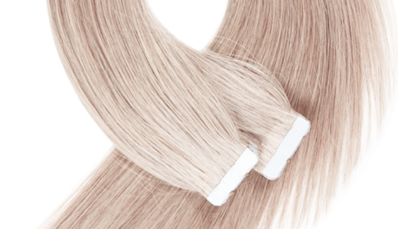

Perfect volume or magnetic length? Why choose when you can have both! Russian hair tape extensions by Elizé fit even questionable hair and hold tightly at least 8 weeks without causing stress or irritation to your scalp. And with the glorious look of selected pure Russian hair all eyes are on you!
Here is what make Elizé different. First, you can attach Elizé tape hair extensions even to very short hair thanks to a reliable double-sided sticky tape. No heating or chemicals are required. The tape itself is very lightweight, and when attached feels like… like nothing, actually! So, there’s no additional tension to your already suffering hair, and you feel beautiful and relaxed.
The upmarket quality of Russian hair gives our hair extensions a particularly long lifespan – a year or longer. You only need to fix the tapes once per 8-12 weeks, and that takes like 30-40 minutes. Elizé taped hair extensions feature not only standard 40 mm and 26-28 mm tapes but also the unique 12-15 mm tape for delicate styling on temples or forelock.
Finally, we use the special hypoallergenic adhesive solution which means Elizé Russian hair tape extensions are safe to use almost by anyone, and are a must for the UK women whose hair tends to become dull or brittle more than average.
We deliver in 2-3 days if in stock, so order now.